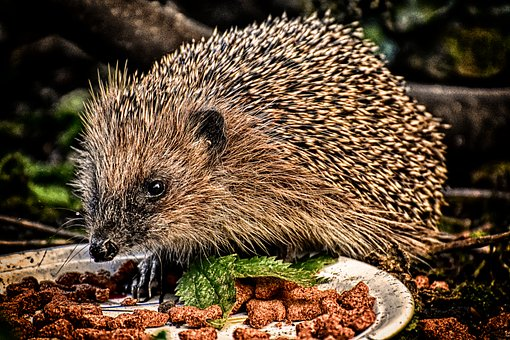

Soal Tes Uraian
Landak yang Kesepian

Ketika si landak sedang melamun di pinggir sungai, seekor kura-kura menghampirinya.
“Hai, siapa namamu? Aku Kuku. Aku perhatikan dari tadi kamu melamun saja.”
Landa kaget mendengar si kura-kura. Dia bingung, ternyata masih ada yang mau menyapanya.
Kuku mengulurkan tangannya ke Landa. Landa menjabat tangan Kuku dengan hati-hati.
“Hai, namaku Landa,” jawab landa gembira.
“Landa, aku tahu kok kamu sedang mempunyai masalah. Wajahmu terlihat murung,” kata Kuku.
“Ah, tidak apa-apa, Kuku.”
“Ceritalah kepadaku. Siapa tahu aku bisa membantumu.”
Karena Kuku ramah dan baik, akhirnya Landa bercerita tentang hal yang menimpanya.
Setelah mendengar cerita itu Kuku merasa iba kepada Landa. Kuku berusaha menghibur Landa. Dia juga mengundang Landa ke pesta di rumahnya. Landa senang mendapat undangan itu.
Keesokan harinya Landa datang ke rumah Kuku. Dengan senang dan bergembira dia segera menuju ke rumah Kuku. Setelah sampai di rumah Kuku ternyata sudah banyak binatang lain yang hadir dalam pesta tersebut, termasuk monyet, kambing, dan kancil.
Kuku menerima kedatangan Landa dengan gembira. Dia mengenalkan Landa kepada teman-temannya. Sebagian dari tamu-tamu itu ada yang mau bersalaman dengan Landa dan sebagian lain menolaknya.
“Mengapa kamu tidak mau bersalaman denganku?” tanya Landa.
“Maaf Landa, aku takut durimu menusuk tanganku,” jawab Kancil.
Ketika mereka sedang asyik berpesta, tiba-tiba monyet berteriak kencang,“Teman-teman, cepat bersembunyi, ada gerombolan serigala mengintai kita.
Seketika itu juga, mereka kalang kabut. Tiba-tiba gerombolan serigala mengejar binatang-binatang yang ada di rumah Kuku.
Kura-kura, monyet, kancil, dan kambing sudah tertangkap oleh serigala.
Seketika itu juga Landa marah. Dia tidak terima melihat teman-temannya di tangkap serigala.
Landa langsung menggulung badannya menjadi bulat, seperti bola duri. Kemudian dia menggelindingkan ke arah gerombolan serigala. Dengan lincah Landa menabrakkan badannya ke gerombolan serigala itu. Serigala itu kesakitan dan gerombolan itu terpecah.
Akhirnya, serigala itu lari meninggalkan Landa dan teman-temannya.
“Hore, hidup Landa!”
Terima kasih Landa, kami minta maaf atas sikap kami selama ini,” kata monyet
sambil tersenyum tulus.
Akhirnya, Landa tidak lagi kesepian. Kini, dia mempunyai banyak teman yang membuat hidupnya lebih bahagia.
Di hutan belantara hiduplah seekor landak. Namanya Landa. Jarang sekali dia bermain dengan binatang lain. Si landak tidak mau bermain dengan binatang lain karena khawatir duri yang ada di tubuhnya akan menusuk temannya. Setiap hari Landa bermain sendiri. Mencari makan pun dia hanya berani pada malam hari di saat binatang lain tidur pulas. Hatinya sedih karena tidak mempunyai teman yang bisa di ajak berbicara dan bermain. Beberapa waktu lalu si Landa mengajak monyet, kambing, kancil, dan binatang lainnya untuk bermain bersama. Akan tetapi, mereka menolak ajakan itu.
“Teman-teman, ayo main bersamaku?” ajak Landa.
“Maaf, Landa, bukannya tidak mau bermain bersamamu, tetapi kami takut tertusuk duri di badanmu itu,” seru teman-temannya.
Aku akan berhati-hati agar duri di tubuhku tidak menusuk kalian.”
“Tapi maaf, Landa, kami belum bisa,” seru teman-temannya.
Setelah mendengar jawaban dari teman-temannya, Si Landa bertambah sedih. Landa tetap berusaha sekuat tenaga agar dia dapat diterima oleh teman-temannya. Landa berusaha menghibur diri. Dia bernyanyi-nyanyi kecil. Landa selalu berpikir tentang nasibnya yang nahas itu. Dia berpikir
bahwa ini adalah nasibnya.
Setelah kejadian itu, Landa semakin tidak berani ke luar rumah. Dia hanya bisa memandang dari balik jendela binatang lain yang sedang bermain. Landa semakin sedih melihat hal itu. Ingin rasanya dia bergabung dengan temantemannya, tetapi apa daya teman-temannya tidak mau bermain dengannya.
Diolah dan dimodifikasi dari Storypedia Binatang Paling
Soal tes tertulis bentuk uraian :
- Tentukanlah bagian-bagian struktur isi teks fabel tersebut dan tuliskan hal-hal yang diungkapkan pada setiap bagian!
- Di dalam teks tersebut terdapat kesalahan penggunaan ejaan dan tanda baca, temukan kesalahan tersebut dan perbaikilah agar teks tersebut baik!